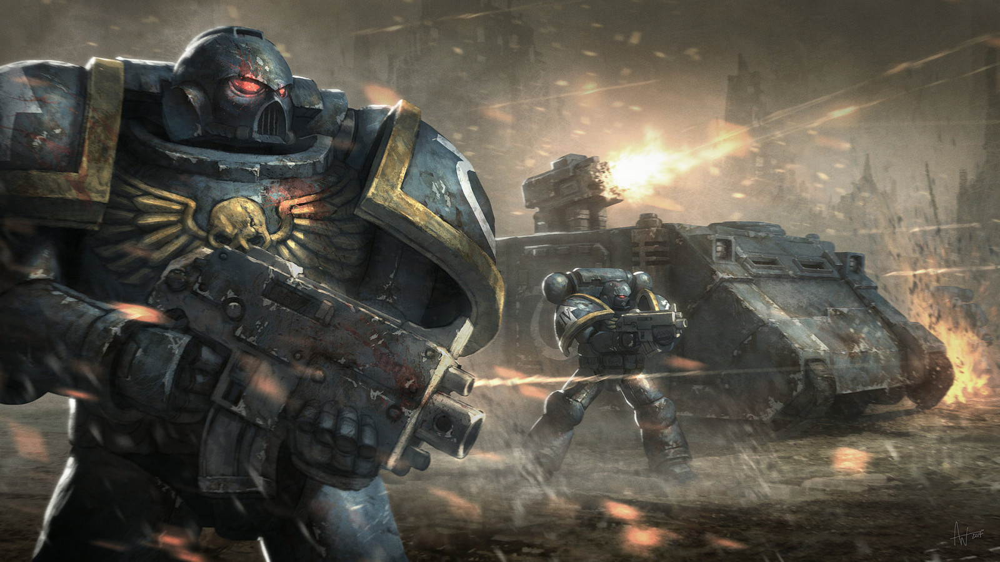

Warhammer 40k

Warhammer 40 000, obecně známý jako Warhammer 40K, vznikl v roce 1987 v tvůrčích hlavách společnosti Games Workshop. Vytvořil ho herní designér Rick Priestley a vydal se na cestu, která nově definovala stolní hry.
Warhammer 40K způsobil revoluci ve stolních hrách díky svému strategickému systému miniaturních válečných her. Hráči pečlivě sestavovali a malovali miniaturní figurky a sváděli epické bitvy, které prověřovaly jejich taktickou zdatnost a strategický důvtip. Warhammer 40K se dočkal mnoha rozšíření a edic, které neustále obohacovaly jeho příběh a představovaly nové frakce a postavy. Díky své neutuchající popularitě se hra dostala i mimo stolní počítače a vznikly romány, videohry a další mediální adaptace.